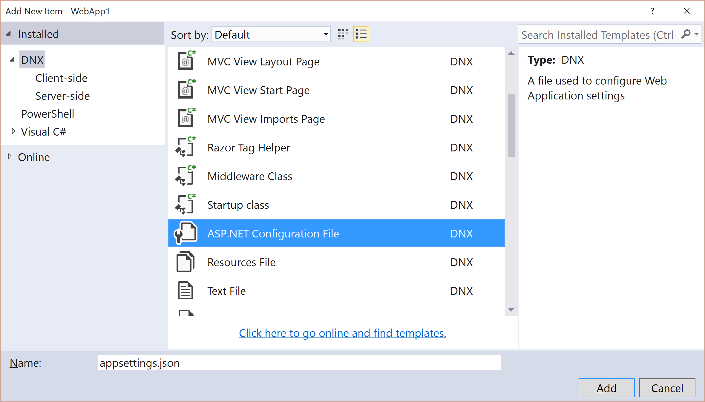

Migrating Configuration¶
By Steve Smith and Scott Addie
In the previous article, we began migrating an ASP.NET MVC project to ASP.NET Core MVC. In this article, we migrate configuration.
Setup Configuration¶
ASP.NET Core no longer uses the Global.asax and web.config files that previous versions of ASP.NET utilized. In earlier versions of ASP.NET, application startup logic was placed in an Application_StartUp method within Global.asax. Later, in ASP.NET MVC, a Startup.cs file was included in the root of the project; and, it was called when the application started. ASP.NET Core has adopted this approach completely placing all startup logic in the Startup.cs file.
The web.config file has also been replaced in ASP.NET Core. Configuration itself can now be configured, as part of the application startup procedure described in Startup.cs. Configuration can still utilize XML files, but typically ASP.NET Core projects will place configuration values in a JSON-formatted file, such as appsettings.json. ASP.NET Core’s configuration system can also easily access environment variables, which can provide a more secure and robust location for environment-specific values. This is especially true for secrets like connection strings and API keys that should not be checked into source control. See Configuration to learn more about configuration in ASP.NET Core.
For this article, we are starting with the partially-migrated ASP.NET Core project from the previous article. To setup configuration add the following constructor and property to the Startup.cs class located in the root of the project:
1 2 3 4 5 6 7 8 9 10 | public Startup(IHostingEnvironment env)
{
// Set up configuration sources.
var builder = new ConfigurationBuilder()
.AddJsonFile("appsettings.json")
.AddEnvironmentVariables();
Configuration = builder.Build();
}
public IConfigurationRoot Configuration { get; set; }
|
Note that at this point the Startup.cs file will not compile, as we still need to add the following using statement:
using Microsoft.Extensions.Configuration;
Add an appsettings.json file to the root of the project using the appropriate item template:
{kind=link}
Migrate Configuration Settings from web.config¶
Our ASP.NET MVC project included the required database connection string in web.config, in the <connectionStrings> element. In our ASP.NET Core project, we are going to store this information in the appsettings.json file. Open appsettings.json, and note that it already includes the following:
1 2 3 4 5 6 7 | {
"Data": {
"DefaultConnection": {
"ConnectionString": "Server=(localdb)\\MSSQLLocalDB;Database=_CHANGE_ME;Trusted_Connection=True;"
}
}
}
|
In the highlighted line depicted above, change the name of the database from _CHANGE_ME to the name of your database.
Summary¶
ASP.NET Core places all startup logic for the application in a single file, in which the necessary services and dependencies can be defined and configured. It replaces the web.config file with a flexible configuration feature that can leverage a variety of file formats, such as JSON, as well as environment variables.